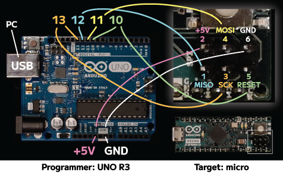

Arduino micro tips
231020、240211、240217 HPへ
Change bootloader/改良型ブートローダ
Arduino microの公式デフォルトブートローダでは、リセットに８秒かかる。BootloaderとUserCodeの両方を読み直すためらしい。Spatkfun社は、互換機"SparkFun Pro micro"を販売しており、改良されたBootloaderを配布している。リセットボタンを押す（シングルクリックする）とUserCodeだけ読み直し0.75secで再起動し、ダブルクリックでbootloaderから読み直す仕様になっている。Arduino microは、SparkFun Pro microとの互換性をもつので、改良されたbootloaderに書き換えられる。
Preparations/準備
マイコンATmega32U4には2種類存在し、Arduino microは5V,16Mhzである
Arduino IDEにSparkFun製品のライブラリをインストール（下記手順）
別のArduinoを書き込み装置にしたてる（下記手順、私はUNOを用意した）
書き換えたいArduino micro
ジャンパーケーブル オスーメス 6本
Steps/作業
-
Install library from SparkFun/Sparkfunのライブラリをインストールする
-
Arduino IDE > Settings
-
https://raw.githubusercontent.com/sparkfun/Arduino_Boards/master/IDE_Board_Manager/package_sparkfun_index.json -
Tools >Boards >nBoards Manager…
-
SparkFun AVR Baordsをinstall 1.1.13 (2023)
-
Tools > Boardsに、Sparkfun AVR Boardsが表示される
-
-
Prepare UNO as a programmmer/UNOを書き込み装置に仕立てる Arduino as ISPの準備
-
Arduino UNOをUSBでPCに接続する
-
File > Examples > 11. ArduinoISP > ArduinoISP
-
書き込む
-
-
Circuit/配線する
- Arduino UNO 5V、GND、10、11、12、13から、Arduino micro ICSPへ接続する

UNO micro 5V 5V GND GND 10 RESET 11 MOSI 12 MISO 13 SCK -
Setttings/設定する
-
Tools > Board: “SparkFun pro micro” （ボード）
-
Tools > Port: “/dev/cu.usb…” （ポート）
-
Tools > Processor: “ATmega32U4 (5V, 16MHz) （プロセッサー）
-
Tools > Programer: “Arduino as ISP” （書き込み装置）
-
注意：Arduino microのATmega32U4は、5V 16MHzである
-
-
Burn bootloader/ブートローダを書き込む
-
Tools > Burn bootloader（ブートローダを書き込む）
-
RESETが一瞬で完了する。8秒かからなくなった。ダブルクリックで8秒。
-
RX・TXのLEDが常時点灯するようになる
-
References/参考
-
Sparkfunの情報 https://learn.sparkfun.com/tutorials/pro-micro--fio-v3-hookup-guide#troubleshooting-and-faq
-
Sparkfun ブートローダの書き込みチュートリアル https://learn.sparkfun.com/tutorials/installing-an-arduino-bootloader
-
Pro microに書き込む例、配線の仕方 https://tomosoft.jp/design/?p=12039
-
ブートローダの違い https://zenn.dev/koron/articles/9fee38469a8acc
-
書き換えること https://ehbtj.com/electronics/arduino-leonardo-speed-up-boot-time/
-
書き換え方、配線、別にArduino UNO（ArduinoISPを書き込んでプログラマに仕立てたもの）が必要。 https://physical-computing-lab.net/arduino/learn_arduino_bootloader_install.html